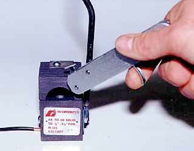
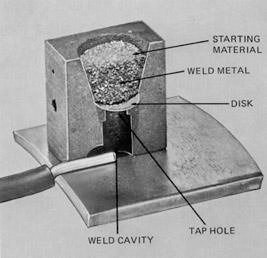
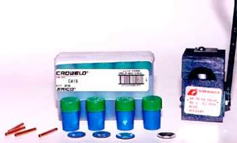

how to install an anode
One of the most often asked questions is "How do you install an anode?" To many, this is the most important section in this booklet. If an anode is not installed correctly, it will not work. As an engineer,a contractor, an anode supplier and as a service provider, I would recommend the following procedure if the anode is attached on-site:
I would install one 17 pound magnesium anode on a 500 gallon tank and two on a 1,000 gallon tank. Remove the outer paper or plastic bag and bury the anode at the end of the excavation where the earth is the wettest and the most conductive to the anode current. If water is available, pour 5 gallons on it to "jump start" the flow of current. Otherwise, the dry backfill will have to absorb moisture from the soil before current will flow. Roll out the anode wire to either the flat plate or angle iron fitting on top of the tank or to the lifting ear. Wrap the wire around the fitting or ear so that the connection can not be pulled off should someone trip on the wire. Leave slack in the wire so that it is not pulled apart when the excavation is backfilled. I recommend attaching the wire to the tank using a thermite weld. Thermite welds are stronger than a mechanical connection such as a nut and bolt. Whether you use a nut and bolt or a thermite weld, remove 1" of insulation on the copper wire and file off any paint or coating at the connection so that the metal wire is making metal contact to the tank for the weld or connection. A copper sleeve should be slipped onto the wire and crimped down with a pair of pliers when using a thermite weld because the heat from the weld metal is hot enough to melt the #12 copper wire in two or hot enough to make it brittle and more susceptible to breaking. To make the connection, you need a hand-held welder consisting of a graphite mold attached to a handle that sets down on the wire and tank. A flint striker gun must be used to ignite the starting powder which in turn, ignites the copper oxide flakes of the weld powder. Both burn in a flash within the graphite mold releasing heat and smoke for a few seconds. Certainly you would need to use a pair of leather gloves and eye protection when making the connection.

It is customary to tap the mold with the striker gun to loosen the red hot copper weld before removing it. With a pair of pliers, break off the dark colored slag on top of the copper weld. Let the wire cool slightly before checking the connection. A good weld cannot be pried or knocked off the steel. The connection needs to be waterproofed with a coating that will resist deterioration in the earth. I recommend using coal tar mastic from a gallon can or it can be taped. You can apply the coating used to coat the tank.Precautions
The welds are very difficult to make when it is rainy, windy or when the steel surface is wet. Also, on occasion, someone loses or forgets the flint gun or weld metal capsules. Because weather and help are unpredictable, you might want to attach the anode to the tank before taking it to the job site. If the lack of manpower prevents you from moving a tank and an anode at the same time, you can attach a 12" long piece of the wire to the tank as described above before transporting it to the job site. You can then connect the anode wire to the 12" wire with a copper sleeve or crimpit after the tank has been set.
If the starting powder gets wet, it will not light. You cannot light it with a match or even a propane torch. You can save small amounts of starting powder for when it is needed. Sprinkle some of the saved starting powder on top of the damp powder and it will usually light. In time, the flint in the flint gun will wear down and will need to be replaced. Replacement flints are sold with tobacco products in stores.
While the weld will not ignite the propane in the tank, it could ignite propane in sufficient concentration in the excavation around the tank. Propane is heavier than air and will collect at your feet. If you smell propane, do not make the connection with the weld.
If the lead wires are long enough, both can be attached on the same angle iron plate on top of the tank using one weld. Two #12 wires will fit into the groove under the mold and two wires usually absorbs the heat of the molten copper without overheating the wire thus eliminating the need for a copper sleeve.

Finally, small tin colored metal discs come with the weld metal capsules. The discs are used to hold the powder in the mold prior to ignition. The disc melts during the exothermic reaction. It is placed into the mold with its cupped side up. If you happen to run out or lose your last disc prior to your last weld, you can use about any material to hold the powder in the mold. Examples would include gum wrapper foil, aluminum foil, paper and even a leaf. Remember that after making a weld, the mold is very hot. Do not set it on or next to any flammable materials.If, for any reason, you would like to disconnect the anode from the tank after it has been buried, the anode wires will need to be looped through the dome. This provides a place where one can cut the wires, if desired. This will be explained in more detail in the last section under "Testing for Corrosion Protection”.

RecommendationsAs mentioned earlier, I recommend installing two 17 pound magnesium anodes on a 1,000 gallon tank. The reason I recommend two is to ensure that enough cathodic protection current is available for many years. We do not know:
1) how effective the coating has been or will be over the years.
2) if the anodes have or are being installed as described in this booklet.
3) if each connection or weld is made correctly.
4) how much experience the tank installer has with cathodic protection systems.
5) what changes will occur to the soil to make it more corrosive.
6) if the tank is connected to a metal service line that should be protected along with the tank.
7) if a dielectric union isolates the underground metal piping from the plumbing and electric utilities in the house.
We would rather have too much protection than to have too little protection. I would rather pay for an extra anode than to risk having a leak in 10 years.
© Copyright 1999-2015 Anode Systems Company
124 North 22nd Ct. Grand Junction, CO 81501 (888) 609-9766 toll-free
ANODE SYSTEMS COMPANY